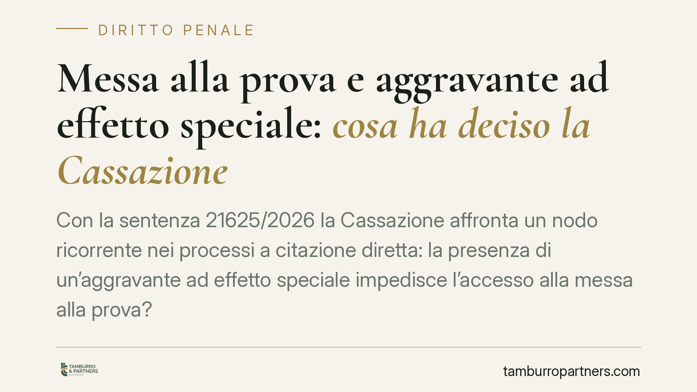

Messa alla prova e aggravante ad effetto speciale: cosa ha deciso la Cassazione
Con la sentenza 21625/2026 la Cassazione affronta un nodo ricorrente nei processi a citazione diretta: la presenza di un'aggravante ad effetto speciale impedisce l'accesso alla messa alla prova? La risposta è no, ma il giudice deve valutare con maggiore rigore le prospettive di reinserimento quanto più grave è la condotta contestata.

Il caso e la questione
La messa alla prova (istituto disciplinato dall'art. 168-bis cod. pen.) consente all'imputato di estinguere il reato attraverso un programma di trattamento che include lavoro di pubblica utilità, condotte riparatorie ed eventuale risarcimento del danno. L'accesso è però legato a soglie precise, calcolate sul limite edittale della pena.
Il problema sorge quando al reato viene contestata un'aggravante ad effetto speciale: quella categoria di circostanze che modifica la pena in misura superiore a un terzo o ne prevede una di specie diversa. L'incremento sanzionatorio può spingere la pena oltre le soglie previste per la messa alla prova, con il rischio di uno sbarramento automatico.
La Sezione VI della Cassazione, con la sentenza 21625/2026, ha chiarito i confini della questione nei reati a citazione diretta, ossia quelli per cui il pubblico ministero esercita l'azione penale senza udienza preliminare (art. 550 cod. proc. pen.).
L'inquadramento normativo
L'art. 168-bis cod. pen. àncora l'ammissibilità della messa alla prova a reati puniti con pena edittale detentiva non superiore a quattro anni, oppure a quelli indicati nell'art. 550 comma 2 cod. proc. pen., per i quali è prevista la citazione diretta a giudizio.
Il punto centrale della decisione è questo: la contestazione di un'aggravante ad effetto speciale non determina automaticamente l'esclusione dall'istituto nei reati a citazione diretta. In altri termini, non opera uno sbarramento meccanico fondato sul mero aumento di pena.
Resta però fermo un dovere di valutazione rafforzato in capo al giudice di merito. La maggiore gravità della condotta, segnalata dall'aggravante, incide sul giudizio prognostico relativo alla risocializzazione dell'imputato: tanto più grave è il fatto, tanto più approfondito deve essere l'esame delle concrete prospettive di reinserimento e dell'idoneità del programma di trattamento proposto.
Cosa cambia in concreto
La pronuncia ha un impatto diretto sulla strategia difensiva. Fino a oggi la presenza di un'aggravante speciale veniva spesso letta come ostacolo insuperabile, inducendo a rinunciare alla richiesta. La Cassazione ribadisce invece che la valutazione deve restare ancorata al tipo di reato e al regime processuale, non a un'applicazione aritmetica delle soglie.
Per l'imputato significa che la richiesta è percorribile anche in presenza di aggravanti rilevanti, purché sostenuta da un programma di trattamento solido e credibile.
Per la difesa muta il baricentro del lavoro: non basta verificare l'astratta ammissibilità, occorre costruire una proposta trattamentale che regga a un vaglio più severo. Il giudice guarderà alla concretezza delle attività previste, alla serietà delle condotte riparatorie, all'eventuale risarcimento e, soprattutto, alla coerenza di tutto ciò con la gravità del fatto.
Per il giudice di merito, la sentenza traccia un metodo: niente automatismi, ma una motivazione puntuale sul giudizio prognostico, che dia conto del perché il percorso proposto sia o non sia idoneo rispetto alla condotta contestata.
Cosa fare in concreto
- Verificate il regime processuale del reato contestato: se rientra nella citazione diretta ex art. 550 cod. proc. pen., l'aggravante speciale non chiude a priori la porta alla messa alla prova.
- Costruite un programma di trattamento dettagliato, proporzionato alla gravità del fatto: lavoro di pubblica utilità, percorsi riparatori e, dove possibile, risarcimento del danno.
- Documentate le prospettive di reinserimento con elementi concreti (contesto lavorativo, familiare, eventuali percorsi già avviati), perché su questo si concentrerà il vaglio del giudice.
- Motivate la richiesta anticipando le obiezioni legate alla gravità: dimostrate perché il programma sia comunque idoneo alla risocializzazione.
- Valutate i tempi: la richiesta va formulata nei termini processuali previsti, pena la decadenza dalla facoltà.
La decisione conferma una lettura orientata alla funzione rieducativa dell'istituto, senza trasformare le aggravanti in automatiche cause di esclusione. Ma sposta sull'imputato e sulla difesa l'onere di una proposta trattamentale all'altezza della gravità contestata.
Consigliamo di affrontare questo tipo di valutazione con un esame preventivo e caso per caso, prima di depositare l'istanza.
---
*Contributo informativo a cura di Tamburro & Partners - Avv. Giuseppe Tamburro. Non costituisce parere legale.*
Ogni condominio ha una storia a sé.
Se gestisci un'amministrazione e vuoi un confronto su una specifica questione condominiale, scrivi allo studio. Ti rispondiamo entro un giorno lavorativo.